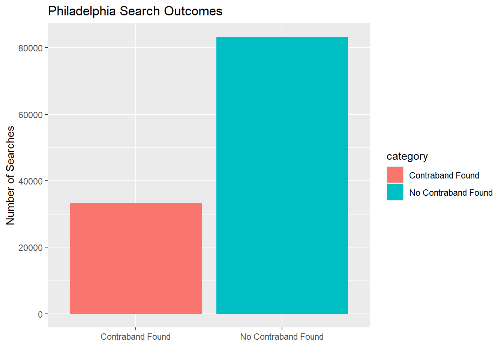

SELECT
state,
COUNT(*) AS total_stops,
SUM(citation_issued) AS citations,
ROUND(SUM(citation_issued) / COUNT(*), 2) AS citation_rate
FROM (
SELECT
'CA' AS state,
citation_issued
FROM ca_san_francisco_2020_04_01
UNION ALL
SELECT
'FL' AS state,
citation_issued
FROM fl_tampa_2020_04_01
) combined
GROUP BY state
ORDER BY citation_rate DESC;SQL
Using SQL to analyze police traffic stops
The data for this analysis comes from the Stanford Open Policing Project, published in Pierson et al. (2020). Which can be found in https://openpolicing.stanford.edu/data/. In this project, I want to compare reasonable driving stops for drivers across states. First, I will compare drivers from California and Florida with the tentative question: Which state has better drivers? To answer this question, I will find and compare the proportion of stops that resulted in a citation for each state. On a second analysis, I will utilize Philadelphia’s data frame to find that searches provided resulted in a reasonable cause when performed. This follows the question: Did they have the right suspicion? I will extract the number of searches that found contraband and compare it to the total number of searches conducted.
Better Drivers
In this analysis, the statewide reports of LA and FL are used to form a comparison of the proportion of drivers issued a citation. Since the coverage rate for state wide reports did not reach 100%, 69.8% and % for California and Florida, respectively, two cities in these states were chose as representatives of the state. Thereby we compare San Francisco drivers with Tampa drivers. Two cities with large populations.
head(prop_table) state total_stops citations citation_rate
1 FL 2818240 2818240 1.0
2 CA 905070 631660 0.7The table shows numerically how many stops and how many of those stops resulted in citations.
ggplot(prop_table, aes(x = state, y = citation_rate)) +
geom_bar(stat = "identity") +
labs(
title = "Proportion of Drivers Issued Citations by State Patrol",
x = "State",
y = "Citation Rate"
) From the graph, it can be seen that there is a large difference between the proportion of drivers who were stopped AND received a citation in San Francisco, California and Tampa, Florida. While no conclusions can be drawn from this snippet of data, it can be speculated that perhaps Californian drivers are better drivers and did not commit violations that guaranteed a citation, or it could also propose the idea that traffic officers are more lenient to driving mistakes. Both show a small proportion, which could speak about the cities themselves.
Evidence Found
In this analysis, the data is taken from the Philadelphia, PA table. It seeks to find if searches resulted in finding evidence for a suspected holding of contraband.
SELECT
COUNT(*) AS total_searches,
ROUND(SUM(CASE WHEN contraband_found = TRUE THEN 1 ELSE 0 END)) AS searches_with_contraband,
ROUND(SUM(CASE WHEN contraband_found = TRUE THEN 1 ELSE 0 END) / COUNT(*), 2) AS contraband_hit_rate
FROM
pa_philadelphia_2020_04_01
WHERE
search_conducted = TRUE
AND contraband_found IS NOT NULL;contr_table total_searches searches_with_contraband contraband_hit_rate
1 116455 33230 0.29search_table <- contr_table |>
mutate(searches_without_contraband = total_searches - searches_with_contraband)|>
mutate(contraband_miss_rate = 100 - contraband_hit_rate)
search_table <- contr_table |>
mutate(
searches_without_contraband = total_searches - searches_with_contraband
) |>
transmute(
`Contraband Found` = as.numeric(searches_with_contraband),
`No Contraband Found` = as.numeric(searches_without_contraband)
) |>
pivot_longer(
cols = everything(),
names_to = "category",
values_to = "count"
)
ggplot(search_table, aes(x = category, y = count, fill = category)) +
geom_bar(stat = "identity") +
labs(
title = "Philadelphia Search Outcomes",
y = "Number of Searches",
x = ""
)
DBI::dbDisconnect(con_traffic)Data Source: Stanford Open Policing Project. Pierson, E., Corbett-Davies, S., & Goel, S. (2020). “A large-scale analysis of racial disparities in police stops across the United States.” Nature Human Behaviour, 4(7), 736–745. https://openpolicing.stanford.edu/